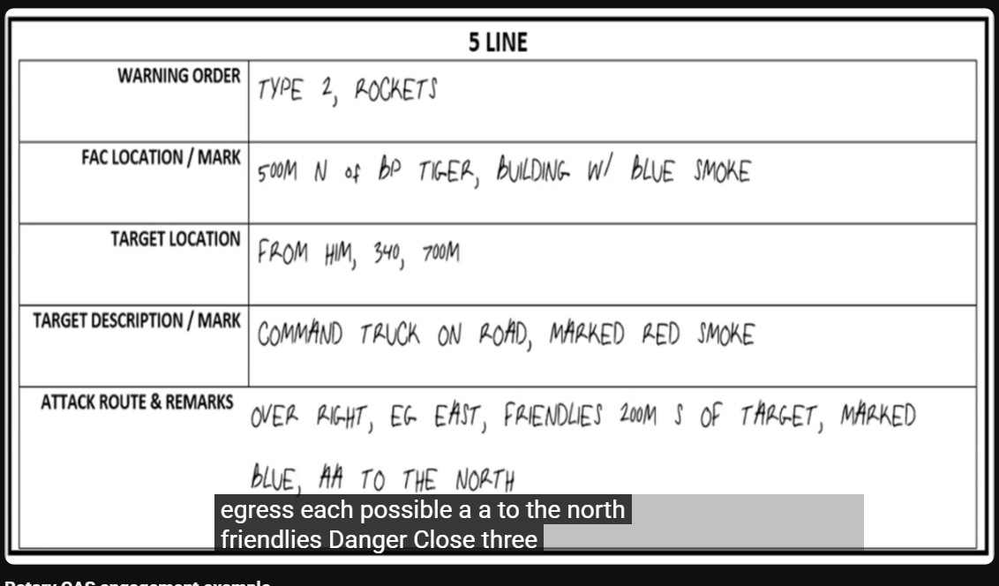

5 Liner
5-Liner CAS Brief to skrócona procedura wezwania wsparcia powietrznego, używana, gdy pełny 9-Line jest niepraktyczny ze względu na czas lub gdy atakujący statek powietrzny ma już dobrą świadomość sytuacyjną. Jest to standardowy format używany do kontroli typu 2 i 3, często w trybie "Armed Overwatch", gdy pilot już obserwuje pole walki.
Używaj procedury 5-Liner, gdy:
- Prowadzisz operacje w trybie Armed Overwatch (pilot jest "On Station").
- Wymagana jest szybka reakcja, a pilot już widzi ogólny rejon celu.
- Wzywający (obserwator) i pilot mają wspólny, widoczny punkt odniesienia.

Skrót
-
Plan Gry (Game Plan / Warning Order)
-
Pozycja sił własnych
- Lokalizacja celu
- Opis i oznaczenie celu
- Ograniczenia (Remarks)
Szczegóły lini
Linia 1: Plan Gry (Game Plan / Warning Order)
Cel: Poinformowanie pilota o zamiarze przeprowadzenia ataku, podanie jego kryptonimu oraz typu kontroli. Struktura: "[Twój kryptonim] dla [Kryptonim pilota]. Mam 5-Line, Typ [1, 2 lub 3] kontroli." Przykład: "Gawron 1, tu Alfa. Mam 5-Line, Typ 2 kontroli." Wyjaśnienie: To najważniejsza linia, która ustanawia "zasady gry".
Typ kontroli informuje pilota: Typ 1: musi wizualnie widzieć cel, Typ 2: może polegać na danych od Ciebie Typ 3: ma wolną rękę w niszczeniu celów w danym obszarze
Linia 2: Pozycja sił własnych
Cel: Podanie lokalizacji najbliższych sił sojuszniczych. Struktura: "Moja pozycja [Grid] oznaczona [metoda]." lub "Najbliżsi sojusznicy [Grid] oznaczeni [metoda]." Przykład: "Najbliżsi sojusznicy 300 metrów na południe od celu, oznaczeni pomarańczowym dymem." Wyjaśnienie: Kluczowa informacja dla bezpieczeństwa. Zawsze musi być jasna i precyzyjna.
Linia 3: Lokalizacja celu
Cel: Precyzyjne wskazanie, gdzie znajduje się cel. Struktura: "Cel na Grid [Grid]." lub "Cel 200 metrów na północ od [punkt odniesienia]." Przykład: "Cel na Grid jeden-dwa-trzy-cztery-pięć-sześć." Wyjaśnienie: Podstawa całego ataku. Musi być dokładna.
Linia 4: Opis i oznaczenie celu
Cel: Opisanie celu i sposobu jego oznaczenia. Struktura: "[Opis celu], oznaczony [metoda oznaczenia]." Przykład: "Jeden czołg T-72, oznaczony wskaźnikiem laserowym, kod 1-6-8-8." Wyjaśnienie: Mówi pilotowi, czego ma szukać i co zniszczyć.
Linia 5: Ograniczenia (Remarks)
Cel: Przekazanie wszelkich dodatkowych, krytycznych informacji. Struktura: "Uwagi: [informacje]." Przykład: "Uwagi: niebezpieczeństwo Danger Close. Wyjście na północ po ataku." Wyjaśnienie: Ostatnia szansa na przekazanie kluczowych danych, takich jak kierunek ucieczki, zagrożenia przeciwlotnicze czy potwierdzenie "Danger Close".
Przykład
Sytuacja: Drużyna "Alfa" jest pod ostrzałem z BTR-a. Śmigłowiec "Gawron 1" jest na pozycji "BP Północ" i obserwuje teren.
- "Gawron 1, tu Alfa. Mam dla ciebie 5-Line, Typ 2 kontroli."
- "Najbliżsi sojusznicy znajdują się w lesie, 400 metrów na zachód od celu."
- "Cel na Grid osiem-siedem-sześć-pięć-cztery-trzy."
- "Jeden BTR-80 na skrzyżowaniu dróg. Nie oznaczam, cel jest oczywisty."
- "Uwagi: Wyjście na zachód po ataku."
- Pilot (potwierdza):
- "Zrozumiałem. Potwierdzam BTR na skrzyżowaniu, grid 876543. Sojusznicy 400m na zachód. Wyjście na zachód. Jestem na kursie."
Wnioski
Poprawna procedura 5-Line jest zwięzła, ale zawiera wszystkie krytyczne informacje bojowe, pozwalając na szybkie i skuteczne działanie przy zachowaniu maksymalnego możliwego bezpieczeństwa. Jeszcze raz przepraszam za wcześniejsze wprowadzenie w błąd.